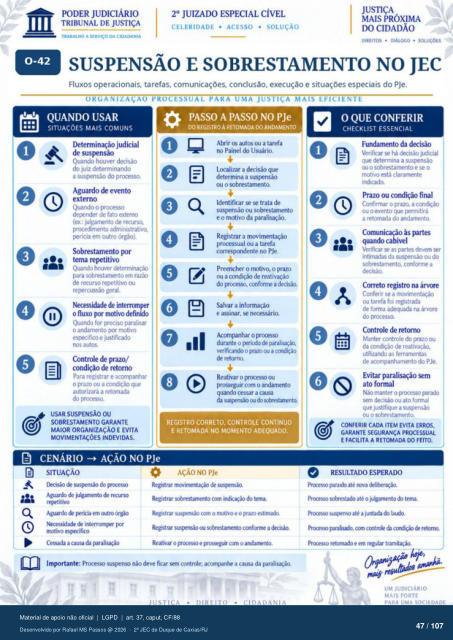

Transcrição automática em português, ainda não revisada. Confira grafia, prazos e termos jurídicos na imagem e no PDF antes de utilizar.
TRABALHO A SERVIÇO DA CIDADANIA
CELERIDADE • ACESSO • SOLUÇÃO
DtÁLcx;o •
SUSPENSÃO E SOBRESTAMENTO NO JEC
Fluxos operacionais. tarefas, comunicações. conclusão, execução e situações especiais do PJe.
ORGANIZAÇAO PROCESSUAL PARA UMA JUSTIÇA MAIS EFICIENTE
QUANDO USAR
SITUAÇÕES MAIS COMUNS
Determinação judicial de susrmsào
Quando houver do juiz determinando
a susÇHtsáo do prxesso. Aguardo de evento
externo Quando o
de fato externo (a, : julgamento de recursa
pnxedimento a&ninistrativo, em Outro órgão).
Sobrestamento pr tema
Quando houver para sobrestamento em rany
de recurso repetitivo ou geral.
Necessidade de interronw o fluxo rnotivo definido
(Àiard-o for veciso paralisar o andamento motivo
es;rciflco e justificado nos autos.
Controle de prazo/ condição de retorno
Para registrar e acompanhar 0 prazo ou a condição que
autcrizará a retMnada prccesscx
USAR SUSPENSÃO OU
SOBRESTAMENTO GARANTE
MAIOR ORGANIZAÇÃO E EVITA
MOVIMENTAÇOES INDEVIDAS.
CENÁRIO -+ AÇÃO NO PJe
e
PASSO A PASSO NO PJe
REGISTRO À RETOMADA DO ANDAMENTO
111 Abrir autos ou a tarefa
no Painel do Usuário. l.cxalizar a decisão que
determina a suwr.áo ou o sobrestamento.
Identificar se se trata de susFnsào ou sobrestamento
e 0 nuÑivo da paralisação. Registrar a movimentaçào
prczessual ou a tarefa correspndente no PJe.
Preencher o mtivo, o prazo ou a condição de reativação
do Ftxesso, a Salvar a informação
e assinar, se necessário. Acornpnhar o
durante o l*ricdo verificando o prazo ou a ccxxiOo
de retorno. Reativar o prtxesso
com 0 andamento quando cessar a causa
da sisFnsà0 ou d:' Mixestxrnto.
REGISTRO CORRETO, CONTROLE CONTÍNUO
E RETOMADA NO MOMENTO ADEQUADO.
AÇÃO NO PJe
SITUAÇÃO
o do
Aguardo jubmento recurso rgrtitivo
Aguudo Frkia em óreo interrompr
mc*ivo esFcific0 Cessada a
Regstrar de susFnú). Registrar com do tema.
Registrar suspnsào com o mtivo e o prazo estimada Regstru solyestarnento conforme a
Reativar o prczesw e pros— cam o andanwito. Imprtante: suWtso ckve ficar contrde; acornpanhe a causa da
O QUE CONFERIR
CHECKLIST ESSENCIAL
Fundamento da Verificar se há dK•isào judicial
que determina a susgwlsáo o sobrestarnento e se o
motivo está claramente indicado.
Prazo ou condição final Confirmar o prazo. a condção
ou o evento que gprmitirá a retornuia do andarrmto
às prtes quando cabível
Wificar se as partes devem ser intimxias da suspensão ou do
sobrestamento. ccyfcyrne a Correto registro na árvore
Conferir se a rnovhentaçáo Ou tarefa foi registrada
de forma adequada na árvore do vczesso.
Controle de retorno Manter controle prazo ou
da condição LRilizarxio as ferramentas
de ú) PJe. Evitar paralisação
ato formal Não manter 0 par")
sern decisào ou ato formal que justifique a sug*nsào
ou 0 sobrestarnento.
CONFERIR CADA ITEM EVITA ERROS.
GARANTE SEGURANÇA
E FACILITA A RETOMADA DO FEITO.
RESULTADO ESPERADO
paraú até rwva &litrraçào. súestú até 0 tema.
susFnso até a juntada do laAE cmtr& retMrw
Prxesso retomalo e em
UM JUDICIÁRIO
MAIS FORTE
Ver também o infográfico original (página 47)
